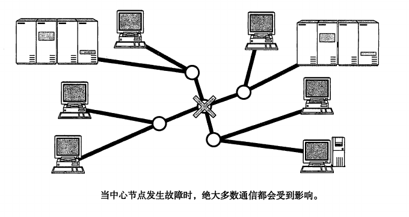
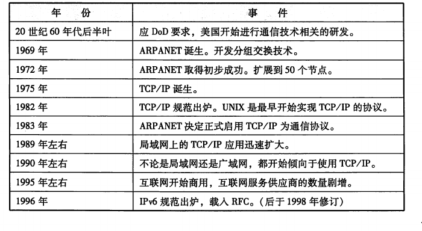
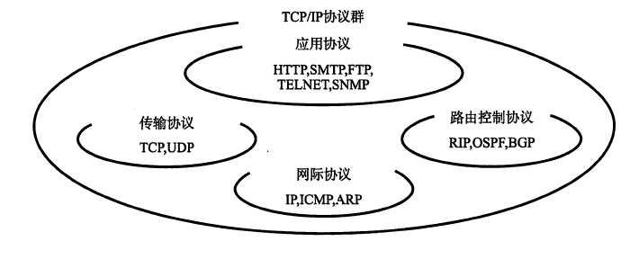
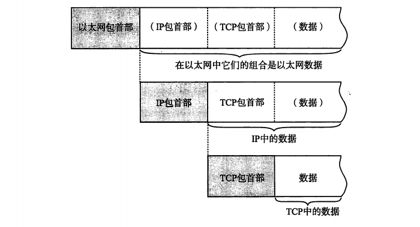
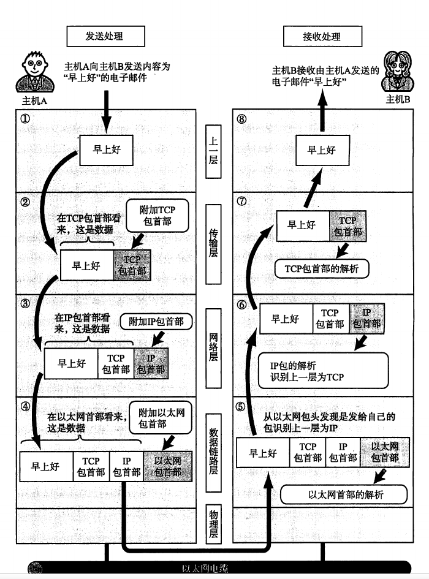

图解tcp-ip
Table of Contents
1 摘录
- 为什么会有tcp/ip 出来   
tpc/ip 是如何在媒介上传输的 
每个分层中.都会对所发数据加一个首部 从下一层看,从上层收到的包全都认为是本层的数据 包 : 全能性描述话语, 帧 : 表示数据链路层包的单位 数据包 : ip 和 udp 等网络层以上分层中包的单位 段 : 表示tcp数据流中的信息 消息 : 应用协议中数据的单位
eg : A - > B email
1 . 应用程序处理 : - 包括编码,管理何时建立通信,何时发送数据 2 . tcp模块的处理: - 根据应用层的指示,来实际负责建立链接,发送数据 以及断开连接,tcp提供将应用层发来的数据顺利的 发送到对端的可靠传输 - 为了实现此功能,应用层数据前端需要附加一个tcp首部 tcp首部包括,源,目的 端口号,序号(标注包中那部分是数据) 校验(判断数据是否被损坏),随后把这些数据打包发给ip 3 . ip模块的处理: - 先把上面的发送数据整合到一起当作自己的数据 并且在tcp首部和tcp数据的前面加上自己ip的首部 所以ip后面跟着tcp首部然后才是应用的首部和数据本身(每层都会有首部) - ip的首部包含接受端的ip地址,以及发送端的ip地址 - 紧随ip首部的还有用来判断其后面数据是tcp很是udp的信息 - ip包生成后,参考路由控制表,决定接受此ip包的路由或者主机 随后ip包会被发送给连接这些路由器或者主机网络接口的驱动程序 实现真正的发送数据 - 如果不知道接收端的mac地址,可以用arp 查找 如果知道了对端的mac地址,就可以把mac地址和ip地址给以太网驱动程序 实现数据传输 4 . 网络接口(以太网驱动)的处理: - 把ip模块的数据当作自己的数据,然后在开头添加自己的首部,然后发送 - 以太网驱动数据首部包含,接受端mac地址,发送端mac地址 标志以太网类型的以太网数据的协议 - 根据上述信息,把包通过物理层传输给接受端 - 发送中会生成fcs,由硬件计算,添加到包最后 fcs 判断数据包是否由于噪声而被破坏